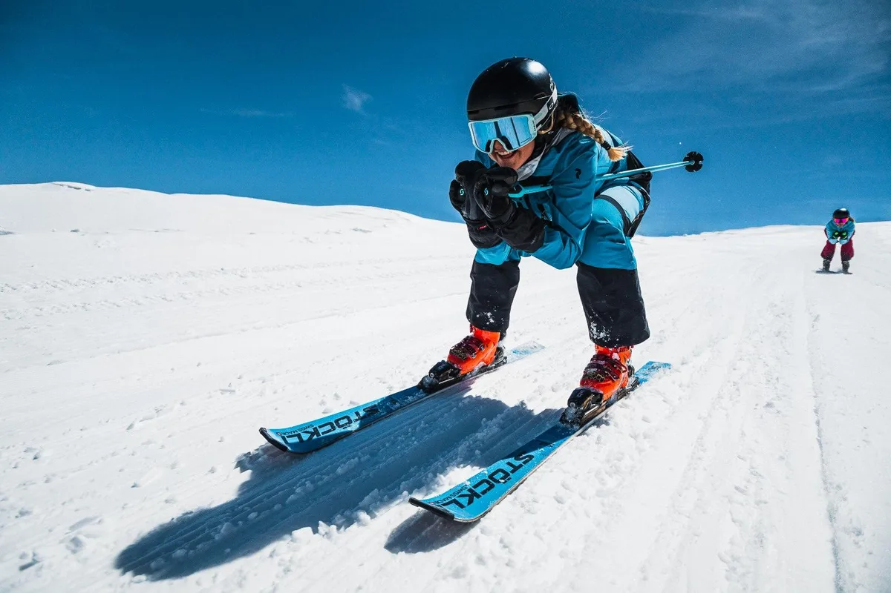

Cerro Catedral 2026: cuándo abre, precios del pase y guía completa
El centro de esquí más grande de Sudamérica abre el 29 de junio. Todo lo que necesitás para planear tu viaje a Bariloche: fechas de la temporada, precios del pase 2026, cómo llegar y dónde alojarte.

A 19 kilómetros del centro de Bariloche, el Cerro Catedral es el centro de esquí más grande del hemisferio sur: 120 kilómetros de pistas, 38 medios de elevación y capacidad para mover 6.000 personas por hora hacia la nieve. Si estás planeando esquiar en la Patagonia en 2026, esta es la guía con todo lo que necesitás saber: cuándo abre, cuánto cuesta el pase, cómo llegar y dónde quedarte.
¿Cuándo abre Cerro Catedral en 2026?
La apertura oficial está prevista para el lunes 29 de junio de 2026, sujeta a las condiciones de nieve. La temporada se extiende habitualmente hasta principios de octubre, lo que la convierte en una de las más largas de Sudamérica.
| Período | Fechas aprox. 2026 | Cómo es |
|---|---|---|
| Apertura | 29 de junio | Inicio de temporada, menos gente, mejores precios |
| Temporada baja | 29 jun – 11 jul · 1 – oct | Pistas tranquilas, tarifas reducidas |
| Temporada alta | 12 jul – 10 ago | Vacaciones de invierno: máxima afluencia y precio |
| Cierre | principios de octubre | Sujeto a la nieve de cada año |
Las fechas exactas se confirman semanas antes según el estado de la nieve. Verificá siempre en el sitio oficial antes de comprar pasajes.
Precios del pase 2026
Catedral ya lanzó la preventa: el pase diario adulto arranca desde $160.000 ARS, con un detalle que conviene tener en cuenta — la preventa anticipada se vende exclusivamente en efectivo (pesos argentinos). En temporada alta (vacaciones de julio) el valor sube, y los menores de 6 a 11 años y los mayores de 65 acceden a tarifas reducidas.
| Pase / servicio | Precio 2026 (ARS) |
|---|---|
| Pase diario adulto (preventa, efectivo) | desde $160.000 |
| Pase diario menor (6–11) / mayor (65+) | tarifa reducida |
| Pase multidía | descuento progresivo (menor costo por día) |
| Alquiler equipo de esquí (esquíes + botas + bastones) | $51.000 – $66.500 por día |
| Alquiler equipo de snowboard (tabla + botas) | $70.500 – $89.500 por día |
Valor de preventa publicado por el centro para 2026. El resto son referencias orientativas: confirmá tarifas vigentes, medios de pago y promociones en el sitio oficial de Catedral Alta Patagonia antes de viajar.
💡 Tip para ahorrar: esquiar en la semana de apertura (fines de junio) o en septiembre ofrece las mismas pistas con mucha menos gente y tarifas más bajas que en las vacaciones de invierno de julio.
La montaña en números
Hay terreno para todos los niveles: pistas verdes y escuela en la base para principiantes, descensos largos para nivel intermedio y fuera de pista exigente en la parte alta que convoca a esquiadores de medio mundo. La nieve combina caídas naturales con un importante sistema de nieve artificial que asegura el esquí incluso en temporadas secas. En 2026 Catedral fue distinguido en Río de Janeiro con el premio O Melhor de Viagem & Turismo, el galardón turístico más importante de Brasil —el principal mercado emisor de visitantes hacia la Patagonia argentina—.



Cómo llegar a Cerro Catedral
El cerro está a unos 19 km del centro de Bariloche, alrededor de 30 minutos en auto. Las opciones:
| Desde | Cómo | Tiempo |
|---|---|---|
| Centro de Bariloche | Auto, transfer o colectivo de línea (Línea 55, ramales Bustillo o Pioneros) | ~30 min |
| Aeropuerto de Bariloche (BRC) | Vuelo directo desde Buenos Aires (~2.5 h) + traslado | ~1 h al cerro |
| Buenos Aires | Avión (2.5 h) o micro (~22 h) | — |
En temporada hay servicio de colectivo regular desde el centro hasta la base del cerro, además de transfers de hoteles y agencias. No hace falta tener auto propio para llegar a esquiar. Cuánto cuesta el tramo centro–Catedral:
| Opción | Costo aprox. 2026 (por tramo) | Detalle |
|---|---|---|
| Colectivo Línea 55 (con tarjeta SUBE) | turista ~$4.500 · residente ~$1.500 | La opción más económica. Sale de la Terminal, ~30 min |
| Taxi / remís | ~$30.000 | Puerta a puerta. Recargo del 20% entre las 20 y las 7 hs |
| Transfer / combi privado | se contrata por persona (ida y vuelta) | Servicio compartido o privado de agencias y hoteles |
Tarifas de referencia: el boleto de colectivo se actualizó en febrero de 2026 y la tarifa de remís rige desde mediados de 2025 (esperá un valor algo mayor en plena temporada). Confirmá precios vigentes con cada prestador.
Dónde alojarse
La mayoría de los visitantes se hospeda en Bariloche y sube a esquiar cada día. Las zonas más elegidas:
Centro de Bariloche — la opción con más vida, restaurantes y precios para todos los bolsillos. Ideal si querés combinar esquí con la chocolatería, los bares y la noche barilochense.
Base del cerro (Villa Catedral) — hoteles y departamentos a pasos de las pistas, para quienes priorizan ski-in / ski-out y madrugar sin traslados.
Circuito Chico y Llao Llao — la zona más exclusiva, frente al lago Nahuel Huapi, con hoteles de lujo y paisaje de postal a 20 minutos del cerro.


Mejor época para ir
La nieve más confiable suele estar entre mediados de julio y mediados de agosto, que coincide con las vacaciones de invierno: las mejores condiciones pero también la mayor cantidad de gente y los precios más altos. Si buscás equilibrio entre buena nieve, menos filas y tarifas más amables, apuntá a la segunda mitad de junio o a fin de agosto y septiembre.
📅 Reservá con tiempo: la temporada 2025 batió récords de ocupación en Bariloche y la demanda de pases y clases desbordó la capacidad en algunos fines de semana. Para 2026 conviene asegurar alojamiento, pases y clases con anticipación, sobre todo si viajás en julio.
🌤 Antes de subir al cerro: clima y pronóstico de Bariloche / Cerro Catedral a 7 días →